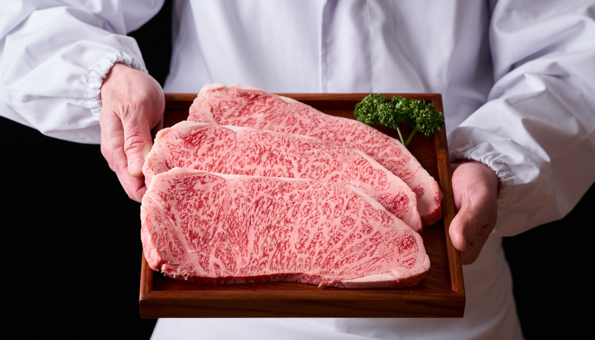
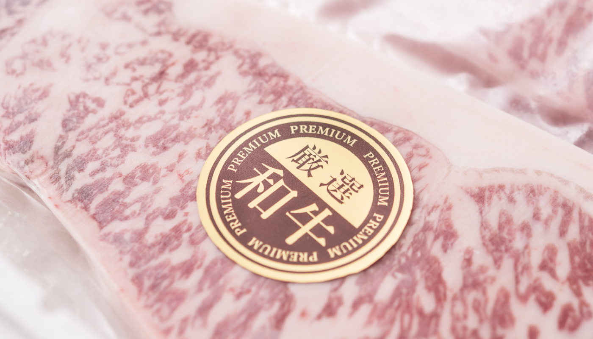
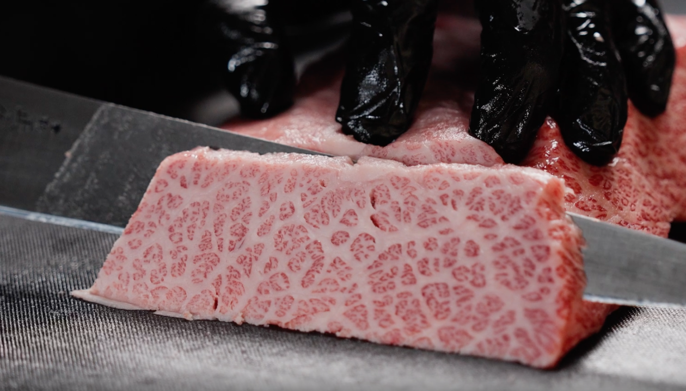

ゼロカラ急速冷凍で、
劣化ゾーン（-1℃〜-5℃）を一瞬で通過。
色・食感・旨味を“切りたてレベル”でキープします。
About us
冷凍の常識を変えて、
本当においしい瞬間を
届ける。
私たちが目指すのは、「冷凍だから仕方ない」を理由にしない品質です。
仕入れの目利き、切り分けの技術、そしてゼロカラ急速冷凍。
すべてを“最高の一口”から逆算して整えています。
ゆっくり凍らせる冷凍では起きやすい、ドリップや食感の変化。
ゼロカラは、その弱点を最小化し、解凍後の満足度を引き上げます。
だからこそ、作りすぎず、良いものを良い分だけ。
数量限定でお届けします。
Products 商品一覧
赤身・希少部位
-
和牛モモ（焼肉用／300g）
¥2,980（税込）
きめ細かな赤身が特徴の、さっぱりとした味わいの部位です。噛むほどに肉本来の旨みが広がり、脂が苦手な方にもおすすめ。焼肉はもちろん、ステーキやローストビーフにも向いています。
-
和牛バラ（焼肉用／300g）
¥3,200（税込）
和牛ならではの甘い脂と濃厚な旨みを楽しめる部位です。焼いた瞬間に立ち上がる香ばしさが食欲をそそります。ご飯のお供としても満足感の高い一品です。
-
和牛肩（煮込み用／400g）
¥2,700（税込）
じっくり火を入れることで、やわらかさと深いコクが引き立つ部位です。煮込み料理やカレー、シチューなどに最適。時間をかけるほどに、和牛の旨みが料理全体に溶け込みます。
ホルモン
-
和牛モモ（焼肉用／300g）
¥2,980（税込）
きめ細かな赤身が特徴の、さっぱりとした味わいの部位です。噛むほどに肉本来の旨みが広がり、脂が苦手な方にもおすすめ。焼肉はもちろん、ステーキやローストビーフにも向いています。
-
和牛バラ（焼肉用／300g）
¥3,200（税込）
和牛ならではの甘い脂と濃厚な旨みを楽しめる部位です。焼いた瞬間に立ち上がる香ばしさが食欲をそそります。ご飯のお供としても満足感の高い一品です。
-
和牛肩（煮込み用／400g）
¥2,700（税込）
じっくり火を入れることで、やわらかさと深いコクが引き立つ部位です。煮込み料理やカレー、シチューなどに最適。時間をかけるほどに、和牛の旨みが料理全体に溶け込みます。
Gift ギフトにおすすめ 特別な一口を贈る
神戸和牛の旨さを、ゼロカラ急速冷凍で“最高の状態”のままお届け。
冷凍だからこそ、受け取る側の都合で楽しめるギフトになります。
Reasons
iiniku翔がギフトとして
選ばれる理由
-
01
解凍しても
満足度が落ちにくい一般的な冷凍は、ゆっくり凍ることで食材の細胞に負担がかかり、
解凍時にドリップ（旨味の流出）が出やすくなります。
iiniku翔はゼロカラ急速冷凍で、劣化しやすい温度帯を短時間で通過し、
色・食感・香り・旨味をできる限りそのままキープ。
焼いたとき、切ったとき、口に入れたときに「違い」が出るように設計しています。 -
02
冷凍で届くから、
受け取りやすい冷蔵ギフトは、受け取るタイミングや調理予定がずれると、
「急いで食べなきゃ」という負担になりがちです。
冷凍で届くiiniku翔のギフトなら、受け取ったあとに保管ができ、
家族が揃う日、記念日、週末のごちそうなど、ベストなタイミングで楽しめます。
贈る側も、相手の予定を細かく気にせず選びやすいのがメリットです。 -
03
“良いものを良い分だけ”の
数量限定iiniku翔は、仕入れた肉をただ並べるのではなく、
切り分け・下処理・ゼロカラ急速冷凍までを一連の品質設計として行っています。
その工程には加工キャパがあり、最高の状態で仕上げられる量には上限があります。
だからこそ、作りすぎず、良いものを良い分だけ。
数量限定は、“売り切れ商法”ではなく、満足度を落とさないための約束です。